Compared to densely connected (feed forward) neural networks, recurrent neural networks (RNN) have better
capability to model sequence data (such as text and time series data) by maintaining an internal
loop over sequence elements. This project explores how to use RNN with Long Short Term Memory (LSTM)
layers to perform a sentiment analysis task on the Roman Urdu text data.
The goal is to develop some guidelines and insights
as how to apply deep learning methods to process text data.
Models are built using Keras.
Sentiment analysis is a popular field of natural language processing which involves identify and extract opinions/emotions from text data. It has important applications in areas such as customer reviews and survey responses, from customer marketing to health care. In machine learning, sentiment analysis can be handled by any type of classifiers (e.g. SVM, logistic regression, tree models, neural networks, etc). However, as text data is usually big and complex, deep learning has been very popular for sentiment analysis. This project focuses on the deep learning approach and uses a few other types of models as baseline benchmarks.
Compared to structured data, the first step to work with text data is to tokenize/vectorize them so that they can be used as input for the machine learning algorithms. Traditionally, feature engineering tools such as N-grams are powerful for many of the "shallow" learning methods but is not appropriate for deep learning models, mainly because the bag-of-words method doesn't preserve the global ordering pattern (tokens generated form a set but not sequence). For this project, the word embedding method is used to tokenize the texts. Note that compared to the one-hot-encoding method (which is popular for encode categorical data), word embeddings are learning from the actual data - they create vectors that are dense, low-dimensional, and tend to reflect the semantic relationship between words.
The text data in this project is the Roman Urdu text dataset, which contains more than 20,000 comments (in Roman scripts) with labels (negative, neutral, or positive). Note that some of the comments have special characters (for example, happy faces, empty squares, etc.), these characters are included in the comments (therefore maybe included in the vocabulary list).
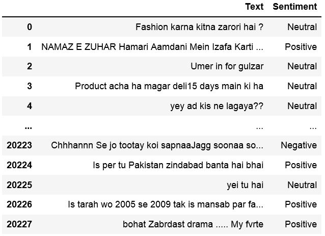It should be noted that the class labels are not evenly distributed (most of the comments are neutral), however, because the imbalance is not very significant, no oversampling/undersampling is done. Also note that the comments have various length, some are very short and some are very long. In this task, only the first 100 words are considered for each comment.
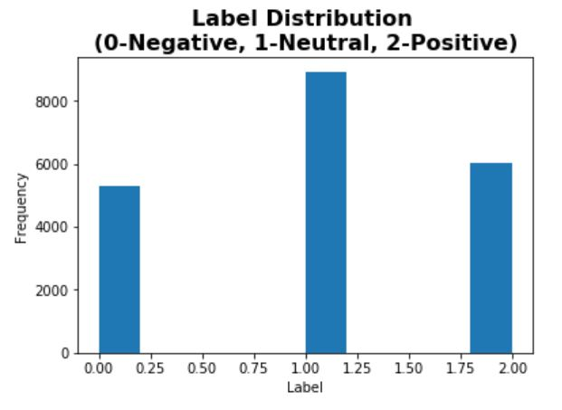 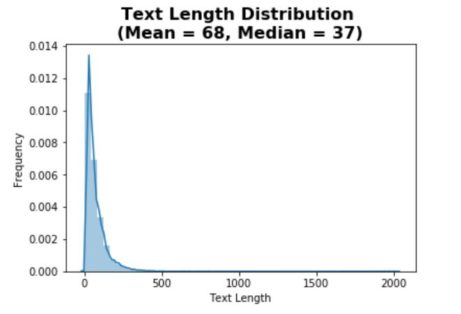The vocabulary list only considers the top 10,000 words. Note that in total there are more than 30,000 unique tokens in the dataset. Using only the frequent words avoid the word embeddings to be too noisy.

Before building RNN models, three baseline or alternative models are built. This step is important as the final RNN model can only be accepted if it can beat the performance of the cheaper and simpler alternative models. For this problem, the following three types of models are used as baselines:
Before building a RNN, a simple DNN model (with a single layer) is built to see the performance of ignoring the sequence pattern of the data.
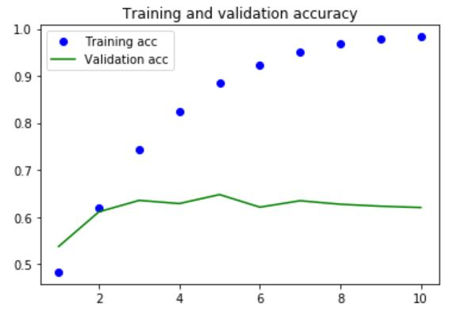The model starts to overfit after 2 epochs. A regularized version using dropout is then built.
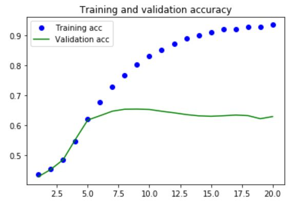With the regularization added, less overfitting is seen. It is noticed that the validation accuracy stops improving after 10 epochs (stays flat around 65%).
The regularized model is fit again and used on the test data. An accuracy of 61% is seen on the test data. The soft probability distribution for each class is plotted as below.
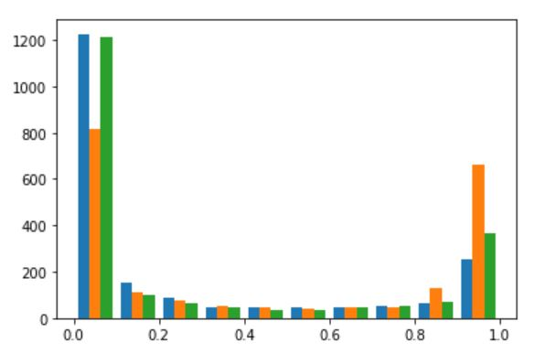Three RNN models have been built for this case. The first model contains a single small LSTM layer. The second model contains a single bigger LSTM layer. The third model contains two LSTM layers. Regularization using dropout is applied to all three models. From the plots below, it can be seen that the performance is very similar on the validation set - increasing the complexity does not improve the predictive power.
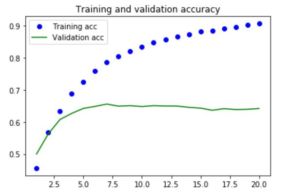 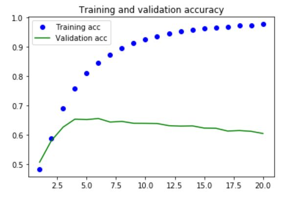 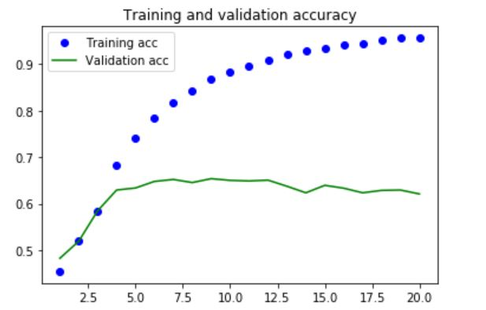Overfitting is seen in all three models. An accuracy of 63% is seen on the test data for all three models, which has a small improvement compared to the feed-forward network (with 61% accuracy). The soft probability distribution for each class is plotted as below.
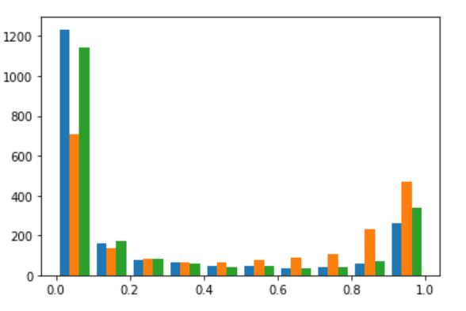A bidirectional RNN is a popular tool in many NLP tasks, it consists of two regular (one directional) RNNs which process the data in opposite directions, and then combing their representations together.
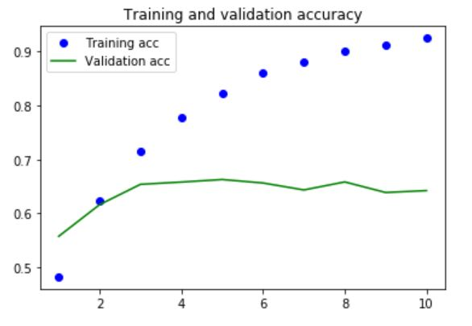In this case, the bidirectional RNN show similar performance as the regular RNNs. However, it takes much longer time to train the model (as its complexity is much higher). In this case, it possibly means that reading the comments backward does not show any significant new pattern.
Here are some general remarks on bidirectional RNNs.
Two important points can be concluded from the analysis. First, deep learning models are performing much better on this text data - compared other "shallow learning" methods. Second, various types of RNN models do not significantly outperform the densely connected networks (only small improvement). Here are some possible explanations on why LSTM is not performing much better.
Last updated on Dec 1, 2019